Strategy
Rest material optimization
The following applies to the Cavities and open areas and Only cavities optimization methods:
Steep areas in cavities always undergo Z constant machining while flat areas in cavities (bottoms) are always machined parallel to the contour.
The following optimization methods are available:
Standard
There is no optimization when machining the rest material. This strategy corresponds to standard machining in earlier hyperMILL versions. Machining can be non-slope-dependent or slope-dependent.
Cavities and open areas
Both cavities and open (accessible) areas are machined. Slope dependent machining is automatically activated.
Machining mode
Slope dependent machining - All areas (1): Steep areas in cavities always undergo Z-constant machining, while flat areas in cavities (grounds) are always machined parallel to the contour. Steep and flat areas can be machined using the Normal, Parallel or Z-Level strategies.
Slope dependent machining - Steep areas (2): Steep areas in cavities undergo Z-constant machining. Steep areas within openly accessible areas can be machined using the Z-Level, Parallel and Normal strategies.
Slope dependent machining - Flat areas: (3) Cavities are not machined! Flat areas within openly accessible areas can be machined using the Parallel or Normal strategies.
| 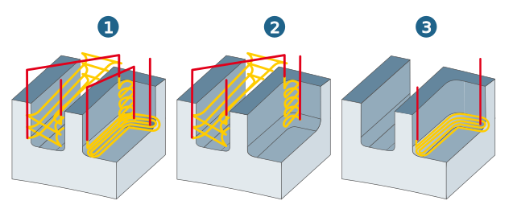 |
Only cavities
Only cavities are machined. Slope-dependent machining is automatically activated.
Machining mode
Slope dependent machining - All areas (1): Steep areas in cavities always undergo Z-constant machining, while flat areas in cavities (grounds) are always machined parallel to the contour.
Slope dependent machining - Steep areas (2): Steep areas in cavities undergo Z-constant machining. Flat areas are not machined.
| 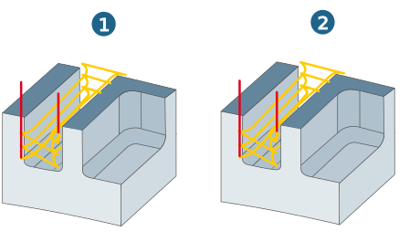 |
Cavity depth (1): Available for the Cavities and open areas and Only cavities strategies. Defines the depth from which the machining mode switches to cavity mode.
Calculation method:
R5 Radius reference tool
R1.5 Radius machining tool
 |
Example of use
If the value for the cavity depth (1.45 and 3.36) is larger than the value defined under machining mode (1.4 for (1) and 3.3 for (2)), machining will take place in cavity mode.
| 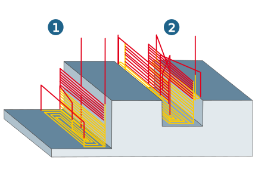 |
If the value for the cavity depth (1.45 or 3.36) is smaller than the value defined under machining mode (1.5 for (1) or 3.5 for (2)), machining will take place in normal mode.
| 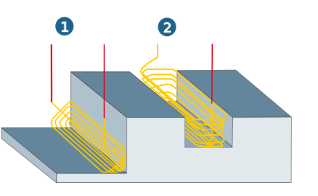 |
Complete Machining
For this machining mode, a bullnose end mill can also be used as a reference tool. Cavities and open areas are machined. Slope-dependent machining is automatically activated.
Machining mode
Slope dependent machining - All areas (1): Steep areas undergo Z-constant machining, while flat areas are machined parallel to the contour.
Slope dependent machining - Steep areas (2): Steep areas undergo Z-constant machining.
| 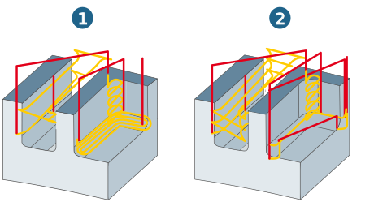 |
Open areas without cavities
Only open areas are machined.
Machining mode
Slope dependent machining - All areas (1): Both steep and flat areas (openly accessible) can be machined using the Normal, Parallel or Z Level (only available for steep areas) strategies. Steep areas in cavities are not machined.
Slope dependent machining - Steep areas (2): Steep areas (openly accessible) can be machined using the Normal, Parallel or Z Level strategies. Steep areas in cavities are not machined.
Slope dependent machining - Flat areas (3): Flat areas can be machined using the Normal or Parallel strategies.
| 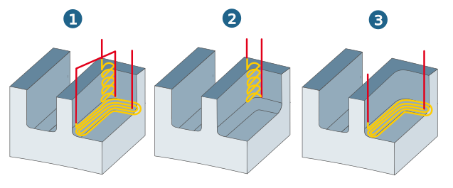 |
Machining mode
For this machining mode, you must distinguish between slope-dependent and non-slope-dependent machining. When slope dependent machining is switched off, the following machining strategies are available:
Normal (1): Machining takes place at a 90° angle to the direction of flow of the rest material.
Parallel (2): Machining is parallel to the direction of flow of the rest material.
| 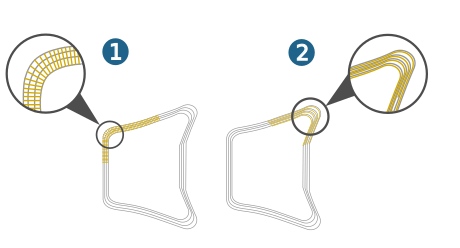 |
When slope dependent machining is switched on, the following machining strategies are available:
All areas: Steep as well as flat areas are machined. Slope angle: The delimitation of steep and flat areas is determined by defining a slope angle.
Steep areas: Only steep areas whose surface gradient is greater than the defined slope angle are machined.
Flat areas: Only flat areas whose surface gradient is smaller than the defined slope angle are machined.
Note
Depending on the slope angle, you can thus further limit the machining area in addition to the selected boundary.
For this machining strategy, you must distinguish between flat and steep areas.
Flat areas
Normal (1): Machining takes place at a 90° angle to the direction of flow of the rest material.
Parallel (2): Machining is parallel to the direction of flow of the rest material.
Steep areas
Z-Level / Normal (1): Machining is performed in Z-levels corresponding to the vertical infeed defined on the Parameters input page.
Parallel (2): Machining is performed parallel to the flow direction of the rest material corresponding to the horizontal offset defined on the Parameters input page.
| 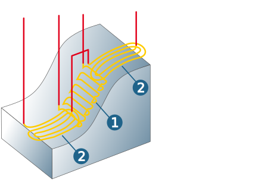 |
Normal (1): Machining is performed parallel to the surface normals.
Z-Level (2): Machining is performed parallel to the Z-level.
| 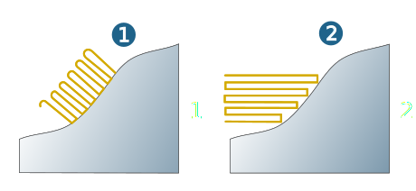 |
Two different machining strategies are available for each of the machining modes Z-Level and Normal.
Oneway (1): Machining is always performed in the same direction.
Zigzag (2): Machining with alternating orientation.
| 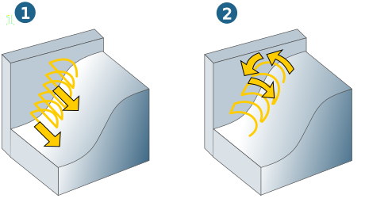 |
Infeed mode
The infeed mode can be defined as needed for all machining strategies.
Smooth: The infeed between the milling paths is the shape of a HSC loop.
| 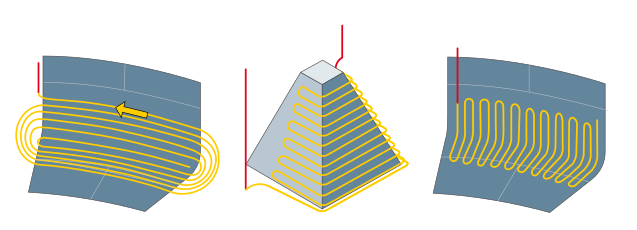 |
Direct: The infeed motion is carried out on the shortest path in the machining feedrate (G1) on the surface. If the linear movement would cause damage to the workpiece, the system guides the tool with surface contact (no material being removed) around the workpiece.
| 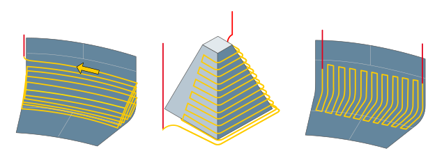 |